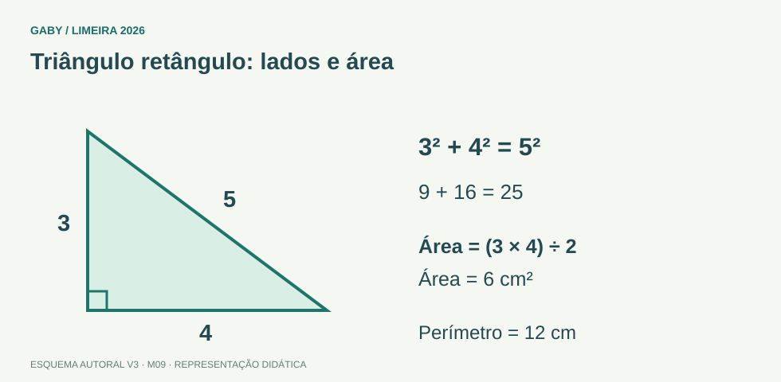

← Índice V3 Gabarito e revisão Referências Exercícios Prioridade Alta Conteúdo aprofundado Questões autorais Objetivos do módulo Calcular perímetros e áreas de figuras básicas. Calcular volumes de prismas retangulares. Aplicar o Teorema de Pitágoras. Como estudar este capítulo: leia cada seção, refaça mentalmente os exemplos sem consultar a solução, anote dúvidas e só depois resolva as questões. O gabarito comentado está em arquivo separado.
Veja para compreender Triângulo retângulo: lados e área 
Esquema autoral da V3. Clique na imagem para ampliar. Leia as relações indicadas e reconstrua o raciocínio com suas palavras. Descrição em texto do esquema Catetos: 3 cm e 4 cmHipotenusa: √(3² + 4²) = 5 cmÁrea: (3 × 4) ÷ 2 = 6 cm²Atenção Pitágoras vale para triângulos retângulos. Perímetro usa unidades lineares; área usa unidades quadradas.
Oficina visual · aplique o esquema Um retângulo mede 6 cm por 8 cm. Calcule perímetro, área e diagonal.
Atividade autoral complementar da V3. Registre sua resposta; a resolução está no arquivo de gabarito e revisão .
1. Perímetro e área Perímetro mede contorno; área mede superfície. Retângulo: P=2(b+h), A=b·h. Quadrado: P=4l, A=l². Triângulo: A=b·h/2.
2. Circunferência e círculo Comprimento da circunferência C=2πr; área do círculo A=πr². Leia se o problema pede contorno ou superfície.
3. Volume Paralelepípedo retângulo: V=comprimento×largura×altura. A unidade final é cúbica.
4. Ângulos Reto=90°, raso=180°, volta=360°. Ângulos complementares somam90°; suplementares somam180°.
5. Pitágoras Em triângulo retângulo, hipotenusa²=cateto1²+cateto2². A hipotenusa é o lado oposto ao ângulo reto e é o maior.
Exemplos resolvidos passo a passo Exemplo resolvido Exemplo 1 Situação: Retângulo 8m×5m.
Resolução: Área=40m²; perímetro=2(8+5)=26m.
Exemplo resolvido Exemplo 2 Situação: Catetos 6 e8. Hipotenusa?
Resolução: c²=36+64=100→c=10.
Exemplo resolvido Exemplo 3 Situação: Caixa 2m×3m×4m.
Resolução: V=24m³.
Pegadinha Pegadinhas e erros frequentes Confundir área e perímetro. Usar diâmetro como raio. Aplicar Pitágoras em triângulo não retângulo. Esquecer unidade quadrada/cúbica. Resumo Resumo de prova Retângulo A=bh, P=2(b+h). Triângulo A=bh/2. Círculo A=πr². Volume=produto das três dimensões. Pitágoras: h²=a²+b². Exercícios do módulo Resolva sem consultar o arquivo de gabarito. As questões são autorais e construídas para treinar os conceitos do edital.
Questão 1. Área de retângulo 7×4:
22 11 14 28 Fonte da questão Autoral — cálculo ou raciocínio · M09-Q01.
Origem: material aprofundado do projeto [Gaby], mantido na V3.
Base para estudo e conferência: Referências temáticas deste módulo .
Questão 2. Perímetro do mesmo retângulo:
11 14 22 28 Fonte da questão Autoral — cálculo ou raciocínio · M09-Q02.
Origem: material aprofundado do projeto [Gaby], mantido na V3.
Base para estudo e conferência: Referências temáticas deste módulo .
Questão 3. Área de quadrado lado5:
125 25 20 10 Fonte da questão Autoral — cálculo ou raciocínio · M09-Q03.
Origem: material aprofundado do projeto [Gaby], mantido na V3.
Base para estudo e conferência: Referências temáticas deste módulo .
Questão 4. Triângulo base10 altura6:
30 60 16 36 Fonte da questão Autoral — cálculo ou raciocínio · M09-Q04.
Origem: material aprofundado do projeto [Gaby], mantido na V3.
Base para estudo e conferência: Referências temáticas deste módulo .
Questão 5. Ângulo reto mede:
180° 45° 360° 90° Fonte da questão Autoral — cálculo ou raciocínio · M09-Q05.
Origem: material aprofundado do projeto [Gaby], mantido na V3.
Base para estudo e conferência: Referências temáticas deste módulo .
Questão 6. Complementares somam:
360° 45° 90° 180° Fonte da questão Autoral — cálculo ou raciocínio · M09-Q06.
Origem: material aprofundado do projeto [Gaby], mantido na V3.
Base para estudo e conferência: Referências temáticas deste módulo .
Questão 7. Catetos 3 e4: hipotenusa:
√7 5 7 12 Fonte da questão Autoral — cálculo ou raciocínio · M09-Q07.
Origem: material aprofundado do projeto [Gaby], mantido na V3.
Base para estudo e conferência: Referências temáticas deste módulo .
Questão 8. Círculo raio3: área:
9π 6π 3π 18π Fonte da questão Autoral — cálculo ou raciocínio · M09-Q08.
Origem: material aprofundado do projeto [Gaby], mantido na V3.
Base para estudo e conferência: Referências temáticas deste módulo .
Questão 9. Circunferência raio3: comprimento:
9π 3π 18π 6π Fonte da questão Autoral — cálculo ou raciocínio · M09-Q09.
Origem: material aprofundado do projeto [Gaby], mantido na V3.
Base para estudo e conferência: Referências temáticas deste módulo .
Questão 10. Volume 2×5×3:
15 60 30 10 Fonte da questão Autoral — cálculo ou raciocínio · M09-Q10.
Origem: material aprofundado do projeto [Gaby], mantido na V3.
Base para estudo e conferência: Referências temáticas deste módulo .
Quando terminar, abra Matemática 09 - Geometria- Perímetro, Área, Volume, Ângulos e Pitágoras - Gabarito e Revisão .
Checklist de domínio ☐ Calcular perímetros e áreas de figuras básicas. ☐ Calcular volumes de prismas retangulares. ☐ Aplicar o Teorema de Pitágoras. Meta do módulo: 80% ou mais nas questões, sem depender de consulta.
Para aprofundar Referências e conteúdos auxiliares Referência complementar Desenhe antes de calcular. No Portal da OBMEP, procure áreas, perímetros e teorema de Pitágoras; destaque no desenho a medida solicitada.
Referências externas de apoio consultadas para a V3 em 27/09/2026. A origem das questões é o material autoral do projeto; estes links não indicam que uma instituição publicou ou validou os exercícios. As páginas externas precisam de internet. Em informática, confira a versão do programa; em legislação, observe o recorte e as regras de atualização do edital.
← Módulo anterior Próximo módulo → Todos os módulos